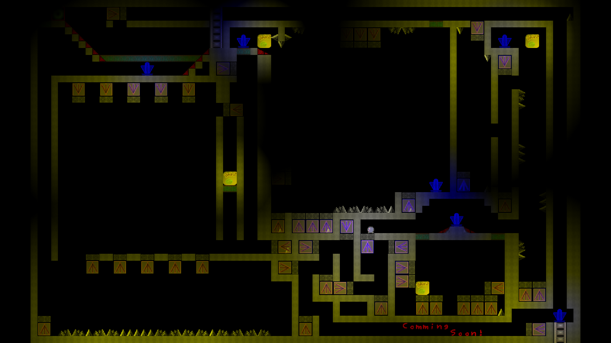
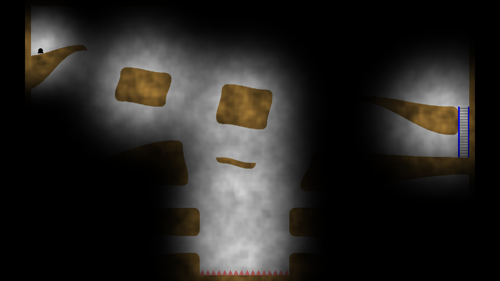

Hoth
The Hoth computer games are a series of platformers that have the player focus upon achieving goals while overcoming obstacles. These games are difficult for the player and success comes through the player's effort rather than through a series of numbers increasing. I am very interested in programs such as this one where the player is forced to develop real life skills.
It would be very interesting to make a program that is compelling and addictive like these games,
but require the player to learn mathematics or some other ulterior skill set in the process that would bare fruits beyond the entertainment experience.
Hoth 1.0 created with Ben Ward in 2008 - 2009.

Hoth 2.0 is rather different from the first version.
Hoth 2.0 has better graphics, a smoother gameplay experience, completely different levels, and many new experiences.
Hoth 3.0: Coming in the future.
